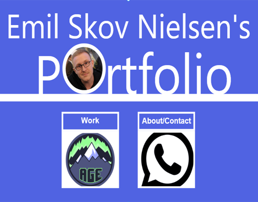

Build my Portfolio
School project
A portfolio is a professional tool used to show your future employer who you are and what you can.
Now you have the opportunity to outline your first presentation to a portfolio in Adobe XD or similar prototype tool. Deliver 1 PDF (max 3 pages and max 10 MB) describing and documenting your prototype!
Add a link in the PDF to an online version of your portfolio (use Adobe XD's publish prototype link).
We select individual portfolios for presentation in class d. 14.09.